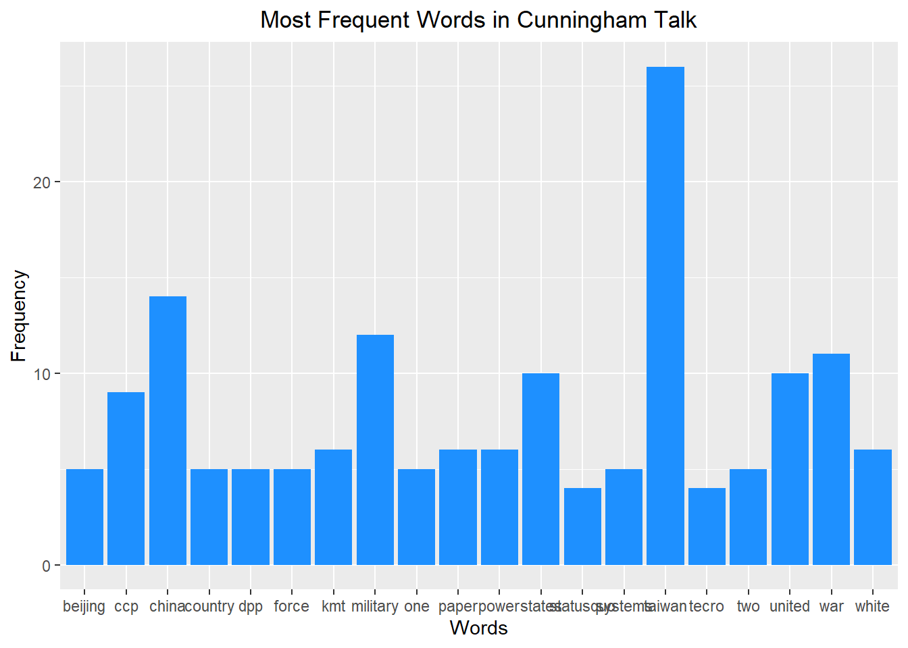

Taiwan Talk - Cunningham
Read in required libraries and the text
Creation of the Corpus for data analysis
# Create a corpus from the text
corpus <- Corpus(VectorSource(text))
# Convert to lowercase, remove punctuation, and remove numbers
corpus <- tm_map(corpus, content_transformer(tolower))
corpus <- tm_map(corpus, removePunctuation)
corpus <- tm_map(corpus, removeNumbers)
# Convert the corpus to a term-document matrix
tdm <- TermDocumentMatrix(corpus)
# Convert the tdm to a matrix and calculate the frequency of each term
m <- as.matrix(tdm)
v <- sort(rowSums(m), decreasing=TRUE)
# Create a dataframe of the most frequent terms and their frequencies
df <- data.frame(word = names(v), freq = v)Creation of plots
# Generate a word cloud
wordcloud(words = df$word, freq = df$freq, scale=c(5,0.5), min.freq = 1, max.words=Inf, random.order=FALSE, rot.per=0.35, colors=brewer.pal(8, "Dark2"))
# Load required libraries
library(tm)
library(ggplot2)# Create a corpus from the text
corpus <- Corpus(VectorSource(text))
# Convert to lowercase, remove punctuation, and remove numbers
corpus <- tm_map(corpus, content_transformer(tolower))
corpus <- tm_map(corpus, removePunctuation)
corpus <- tm_map(corpus, removeNumbers)
# Convert the corpus to a term-document matrix
tdm <- TermDocumentMatrix(corpus)
# Convert the tdm to a matrix and calculate the frequency of each term
m <- as.matrix(tdm)
v <- sort(rowSums(m), decreasing=TRUE)
# Create a dataframe of the most frequent terms and their frequencies
df <- data.frame(word = names(v), freq = v)
# Create a bar chart of the top 20 most frequent terms
ggplot(head(df, 20), aes(x=word, y=freq)) + geom_bar(stat="identity", fill="dodgerblue") + xlab("Words") + ylab("Frequency") + ggtitle("Most Frequent Words in Cunningham Talk") + theme(plot.title = element_text(hjust = 0.5))